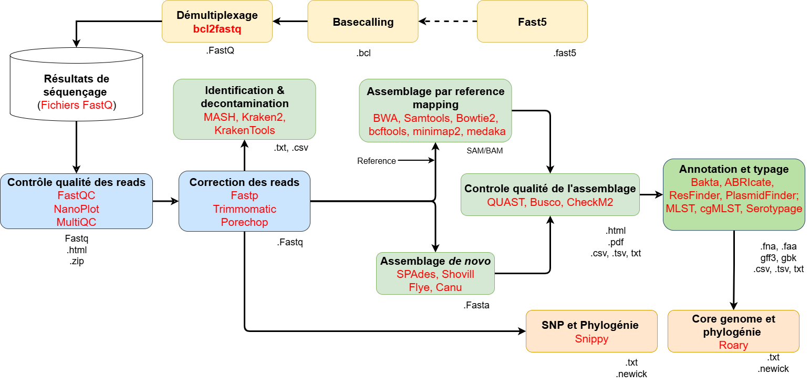

Antimicrobioresistance – Travaux Pratique DIC G2B - 2026
Workflow

1) Mise à jour du système
Advanced Package Tool
C’est un gestionnaire de paquets utilisé par les distributions Linux basées sur Debian (comme Ubuntu) pour installer, mettre à jour ou supprimer des logiciels et leurs dépendances automatiquement depuis des dépôts en ligne.
sudo apt update && sudo apt upgrade -y
#Sur Mac :
/bin/bash -c "$(curl -fsSL https://raw.githubusercontent.com/Homebrew/install/HEAD/install.sh)" #Installer Homebrew
brew update # Met à jour la liste des formules disponibles
brew upgrade # Met à jour les logiciels installés
- sudo (superuser do) : commande qui permet d’exécuter une autre commande avec les privilèges administrateur
- apt update : Met à jour la liste des paquets disponibles
- apt upgrade : Met à jour les paquets installés s'il existe une nouvelle version
2) Installer Miniconda (UNIQUEMENT POUR PREMIERE UTILISATION DE LINUX)
cd ~
wget https://repo.anaconda.com/miniconda/Miniconda3-latest-Linux-x86_64.sh
bash Miniconda3-latest-Linux-x86_64.sh
source ~/.bashrc
#Sur Mac (arm64) :
curl -O https://repo.anaconda.com/miniconda/Miniconda3-latest-MacOSX-arm64.sh
bash Miniconda3-latest-MacOSX-arm64.sh- wget : Permet de télécharger un fichier grâce à un lien de téléchargement
- bash : Ouvrir l’interpréteur Bash et d’exécuter automatiquement toutes les commandes écrites dans le fichier
3) Creation de l'environnement conda
conda env create -f environment.yml
conda env create -f seqsero2.yml
conda env create -f kraken2.ymlTous les logiciels ne peuvent pas fonctionner dans un seul environnement fait de conflits entre eux.
- conda env create : Permet de créer un environnement conda
- -f : creer un environnement a partir d'un fichier .yml
4) Tester l'installation des outils
# Active l'environnement bioninformatic
conda activate bioinformatic
# 4. Vérifier l'installation
fastqc --version
spades.py --version
amrfinder --version
fastp --version
multiqc --version
prefetch --version
mash --version
quast --version
busco --version
amrfinder --version
mlst --version
ectyper --version
abricate --version
porechop --version
filtlong --version
flye --version
Il faut au préalable activer l'environnement conda dans lequel vous avez installé les outils
4b) Téléchargement des reads depuis Sequence Reads Archive (SRA)
#Télécharger les reads
wget -O data.zip "https://zenodo.org/api/records/20627702/files-archive"
unzip data.zip
ls
5) Contrôle qualité
FastQC
FastQC est un outil de contrôle qualité des reads de séquençage. Il analyse les fichiers .fastq ou .fastq.gz pour détecter : La qualité des bases (scores Q), la composition des bases,la présence d’adaptateurs ou de séquences contaminantes et la distribution de la longueur des reads. Il génère des rapports graphiques et résumés pour identifier rapidement les problèmes avant l’assemblage ou l’alignement.
# Pour lancer fastQC sur des fichiers spécifiques
fastqc S1_R1.fastq.gz
fastqc S1_R2.fastq.gz# Pour lancer fastQC sur tous les reads du dossier de travail
fastqc *fastq.gzInterprétation du rapport fastQC : Modules d'analyse de FastQC (site officiel)
NanoPlot
NanoPlot est utilisé pour la qualité des reads de type Oxford Nanopore Technologies
NanoPlot --fastq S2_R1.fastq.gz --outdir nanoplot_results --plots hex dotMultiQC
Outil qui regroupe et résume les rapports de contrôle qualité issus de plusieurs outils (FastQC, fastp, etc.) en un rapport unique interactif, permettant de visualiser rapidement la qualité de tous les échantillons d’un projet de séquençage.
#Lancer le multiqc dans le repertoire courant
multiqc .
6) Correction des reads
Fastp
Fastp est un outil rapide et polyvalent pour le prétraitement des données de séquençage (FASTQ). Il effectue le filtrage de qualité, le trimming des adaptateurs, et la correction des reads appariés. Fastp génère également des rapports de qualité complets en HTML et JSON.
fastp -h #Afficher le manuel d'utilisation de fastp
fastp -i S1_R1.fastq.gz -I S1_R2.fastq.gz -o trim_S1_R1.fastq.gz -O trim_S1_R2.fastq.gz -f 18 -F 18 -t 18 -T 18 -M 20 --detect_adapter_for_pe --dedup- -i : input read 1
- -I : input read 2
- -o : nom de sortie du read1
- -O : nom de sortie du read2
- -f : nombre de bases à couper au début de chaque séquence read1
- -F : nombre de bases à couper au début de chaque séquence read2
- -t : nombre de bases à couper à la fin de chaque séquence read1
- -T : nombre de bases à couper à la fin de chaque séquence read2
- -M : the mean quality requirement
- --detect_adapter_for_pe : détection automatique des adaptateurs
- --dedup : supprimer les séquences dupliquées
Suppression des adaptateurs/barcodes des reads ONT
Lors du basecalling chez Oxford Nanopore, certains reads très courts ou de faible qualité peuvent être supprimés et les adaptateurs/barcodes retirés si les options correspondantes sont activées. Cependant, si des adaptateurs subsistent après le basecalling, ils peuvent être supprimés a posteriori à l’aide d’outils comme Porechop, qui travaillent directement sur les fichiers FASTQ pour effectuer le trimming et la filtration nécessaires avant l’assemblage ou l’analyse.
Filtlong
Outil de filtrage conçu pour sélectionner les meilleurs reads longs (Nanopore ou PacBio) en fonction de leur longueur et de leur qualité. Il permet de fixer un seuil minimal (taille, score) ou de conserver un pourcentage des reads les plus fiables, afin d’améliorer les étapes d’assemblage ou de correction.
# Garde uniquement les reads d’au moins 1000 bases et avec une qualité moyenne d’au moins 10
filtlong --min_length 1000 --min_mean_q 10 S2_R1.fastq.gz | gzip > filtered_S2_R1.fastq.gzPorechop
Porechop est un outil de trimming et de découpage des reads ONT qui permet de retirer les adaptateurs, les barcodes et les séquences de faible qualité.
# Supprime les adaptateurs et découpe les reads chimeriques, en produisant un fichier propre
porechop -i filtered_S2_R1.fastq.gz -o clean_S2_R1.fastq.gz7) Assemblage de novo
SPAdes
Logiciel d’assemblage de novo conçu pour les génomes bactériens, qui reconstitue les séquences complètes à partir de reads courts tout en gérant les erreurs et les variations de couverture.
spades.py -1 trim_S1_R1.fastq.gz -2 trim_S1_R2.fastq.gz --only-assembler -o S1_assembled
- -1 : Reads 1
- -2 : Reads 2
- --only-assembler : Assemblage sans étape de correction des reads
- -o : Nom du dossier de sortie
Flye
Flye est un assembleur de novo spécialement conçu pour les lectures longues issues de technologies comme Oxford Nanopore ou PacBio.
# Usage
flye -h
flye --nano-raw clean_S2_R1.fastq.gz --out-dir S2_assembled --genome-size 5m --threads 8
# Visualier les premières de l'assemblage
head S2_assembled/assembly.fasta
# Avoir le nombre de contigs
grep -c "contig" S2_assembled/assembly.fasta8) Identification de l'espèce
MASH
Outil bioinformatique qui permet de comparer rapidement des génomes ou des séquences en utilisant des empreintes (sketches) basées sur les k-mers, afin d’estimer la distance génomique ou la similarité entre organismes sans alignement complet.
# Création du sketch
mash sketch S1_assembled/scaffolds.fasta -o S1
mash sketch S2_assembled/assembly.fasta -o S2
# Faire le mash sur plusieurs fichiers fasta
for i in *.fasta; do; mash sketch $i ; doneComparaison avec la base de données de référence :
Il faut avant tout télécharger la une base de donnée MASH. Elle sont disponibles ici
# Télécharger la base de donnée par défaut nommée RefSeqSketchesDefaults.msh.gz
wget https://gembox.cbcb.umd.edu/mash/RefSeqSketchesDefaults.msh.gz
#Extraire la base de donnée
gunzip RefSeqSketchesDefaults.msh.gz
# Renommer le fichier
mv RefSeqSketchesDefaults.msh refseq.msh# Comparaison avec la base de référence
mash dist refseq.msh S1.msh > mash_S1_output.csv
mash dist refseq.msh S2.msh > mash_S2_output.csv
# Comparaison pour partir plusieurs fichiers .msh
for i in *.fasta.msh; do; mash dist refseq.msh $i > dist-$i.csv ; done
Identification de la référence la plus proche de notre génome
# Afficher le numéro d'accesion de la référence identifiée la plus proche
sort -k 3 -i mash_S1_output.csv | head -n 1 | awk '{print $1}'9) Évaluation de l'assemblage
QUAST
Outil bioinformatique qui évalue la qualité d’un assemblage de génome en fournissant des métriques comme la taille des contigs, le N50, le nombre de séquences manquantes ou mal assemblées, et permet de comparer différents assemblages entre eux.
#Commande QUAST pour les reads Illumina
quast S1_assembled/scaffolds.fasta -1 trim_S1_R1.fastq.gz -2 trim_S1_R2.fastq.gz -o quast_S1 -r S1_ref.fasta
#Commande QUAST pour les reads Nanopore
quast S2_assembled/assembly.fasta --nanopore clean_S2_R1.fastq.gz -o quast_S2 -r S2_ref.fasta
- -1 : Reads 1 (non obligatoire)
- -2 : Reads 2 (non obligatoire)
- -o : Dossier des résultats
- -r : Référence au format fasta (non obligatoire)
10) Détection de la contamination avec Kraken2 et Bracken
Kraken2
outil ultra-rapide de classification taxonomique des séquences génomiques. Il utilise une base de données de k-mers pour assigner chaque read à un taxon précis. Kraken2 est efficace pour analyser métagénomes et microbiomes à grande échelle.
Bracken
Outil complémentaire à Kraken2 pour estimer l’abondance précise des espèces. Il réajuste les résultats de Kraken2 pour corriger les biais liés aux reads partagés entre taxons.
Téléchargement d'une base de donnée kraken
Plusieurs bases de données sont disponibles pour l'utilisation de kraken ici
# Télécharger la base de kraken de 8gb
wget -O kdb.tgz https://genome-idx.s3.amazonaws.com/kraken/minikraken2_v2_8GB_201904.tgz
#Extraire la base de donnée
tar -xvzf kdb_8GB.tgzLancer analyse de Kraken2
#Activation de l'environnement kraken2
conda activate kraken2
# Classification taxonomique avec Kraken2 sur des reads
kraken2 --db /kdb --paired \
trim_S1_R1.fastq.gz trim_S1_R2.fastq.gz \
--output kraken_reads.out --report kraken_reads.report
# Classification sur un fichier fasta
kraken2 --db /kdb --output kraken_fasta.out --report kraken_fasta.report S1_assembled/scaffolds.fasta
conda deactivate11) Évaluation de la complétude du génome
BUSCO
Outil bioinformatique qui évalue la complétude d’un génome ou d’un assemblage en recherchant la présence de gènes universels conservés (Benchmarking Universal Single-Copy Orthologs), permettant de déterminer si l’assemblage est complet ou s’il manque des régions importantes.
# Afficher les bases de données disponibles
busco --list-datasets
# Lancer l'analyse busco
busco -i S1_assembled/scaffolds.fasta -o busco -l bacteria_odb10 -m genome- -i : Fichier fasta en input
- -o : Nom du dossier de sortie
- - l : Base de données à utiliser (pour avoir toutes les bases de données faire : busco --list-datasets)
- - m : Type de sequence (genome; proteins ou transcriptome)
12) Typage E.coli et Salmonella
ECtyper
module autonome pour le typage sérologique d'Escherichia coli. Il prend en charge les formats de fichiers FASTA (assemblés) et FASTQ (lectures brutes), offrant une identification de l'espèce, un typage sérologique O et H, ainsi que le typage des toxines Shiga.
Seqsero2
une pipeline pour la prédiction du sérotype de Salmonella à partir de lectures de séquençage brutes ou d'assemblages de génomes.
## Lancer l'analyse de ectyper
ectyper -i S1_assembled/scaffolds.fasta -o ectyper
# Lancer ECtyper sur plusieurs fichiers fasta
ectyper -i *.fasta -o ectyper
# Activier l'environnement seqsero2
conda activate seqsero2
# Lancer SeqSero sur des fasta
SeqSero2_package.py -i S2_assembled/assembly.fasta -m k -t 4
conda deactivatePour seqsero2 : (Peut aussi marcher pour les reads)
- -i : fichier input fasta
- -m : recherche k-mer based
- -t : Type d’entrée attendu (ici génome donc =4)
13) Installation de abricate pour recherche de genes de résistance et facteurs de virulence
ABRIcate
# Mise à jour des base de données de abricate
abricate --setupdb
# Affiche les bases de données de abricate
abricate --list| DATABASE | SEQUENCES | DBTYPE |
|---|---|---|
| megares | 6635 | nucl |
| card | 2631 | nucl |
| argannot | 22231 | nucl |
| resfinder | 3077 | nucl |
| plasmidfinder | 460 | nucl |
| ncbi | 5386 | nucl |
| ecoli_vf | 2701 | nucl |
| vfdb | 2597 | nucl |
| ecoh | 597 | nucl |
14) Recherche de gènes de résistance facteurs de virulence et plasmides avec abricate
# Lance abricate avec la base de donnée par défaut (ncbi)
abricate S1_assembled/scaffolds.fasta > abricate.csv
# Lance abricate avec la base de donnée resfinder
abricate --db resfinder S1_assembled/scaffolds.fasta > S1_resfinder.csv
# Lance abricate avec la base de donnée resfinder
abricate --db resfinder S2_assembled/assembly.fasta > S2_resfinder.csv
# Lancer abricate sur plusieurs fichiers csv
abricate --db resfinder *fasta > resfinder.csv
# Recheche la présence de plasmides
abricate --db plasmidfinder S1_assembled/scaffolds.fasta
# Lance abricate avec la base vfdb (virulence factors database)
abricate --db vfdb S1_assembled/scaffolds.fasta > S1_virulence.csv- --db : spécifie la base de données à utiliser
- > : permet de rediriger le résultat de sortie vers un fichier
15) Recherche de gènes de résistance et mutations avec AMRFinder
AMRFinderPlus (NCBI)
AMRFinderPlus est un outil développé par le NCBI qui permet d’identifier les gènes de résistance aux antimicrobiens, les gènes de virulence ainsi que certaines mutations chromosomiques associées à la résistance, à partir de séquences génomiques.
# Lancer AMRFinderPlus sur un assemblage
#Mettre a jour la base de donnees
amrfinder --update
#Liste des organismes avec mutations connues
amrfinder --list_organisms
#Lancer la recherche de mutations et genes de resistances
amrfinder -n S1_assembled/scaffolds.fasta \
-o S1_amrfinder.tsv \
--organism Escherichia
#Lancer la recherche de mutations et genes de resistances
amrfinder -n S2_assembled/assembly.fasta \
-o S2_amrfinder.tsv \
--organism Salmonella
16) Analyse de la MLST
MLST
Le Multi-Locus Sequence Typing (MLST) est une méthode de typage moléculaire qui analyse plusieurs gènes bien conservés au sein d'une espèce pour identifier les souches bactériennes.
# Lancer l'analyse de la mlst
mlst S1_assembled/scaffolds.fasta > mlst.csv
# Lancer l'analyse MLST sur plusieurs fichiers fasta
mlst *.fasta > mlst.csv
Exercice 1 : Comparaison assemblage de novo vs reference mapping
Faire exercice ci-dessous :
# Index de la référence
bwa index S1_ref.fasta
# Alignement des reads sur la référence
bwa mem S1_ref.fasta trim_S1_R1.fastq.gz trim_S1_R2.fastq.gz > aln.sam
# SAM → BAM trié + index
samtools view -bS aln.sam | samtools sort -o aln.sorted.bam && samtools index aln.sorted.bam
# Statistiques de mapping
samtools flagstat aln.sorted.bam > mapping_stats.txt
# Couverture
samtools depth aln.sorted.bam > depth.txt
# Appel de variants
bcftools mpileup -f S1_ref.fasta aln.sorted.bam | bcftools call -mv -Oz -o variants.vcf.gz && tabix -p vcf variants.vcf.gz
# Génération du consensus (assemblage final)
bcftools consensus -f S1_ref.fasta variants.vcf.gz > consensus.fastaQuestions : Comparer les genes de resistances retrouves par la methode de novo et la methode par reference mapping. Que constatez vous ? Pourquoi il est preferable d'utiliser par l'approche de novo ?
Exercice 2 : Reprendre le workflow bactérien à partir des reads téléchargés
# Télécharger le fichier SRA avec suivi de progression
prefetch SRR34342573 --progress
# Extraire les fichiers FASTQ à partir du fichier .sra téléchargé
fasterq-dump SRR34342573/SRR34342573.sra --split-files --threads 4 --outdir ./
# Supprimer le dossier SRA après extraction
rm -r SRR34342573
# Compresser les fichiers FASTQ avec gzip
gzip SRR34342573_1.fastq
gzip SRR34342573_2.fastq
conda deactivate18) Annotation du génome
Outil d'annotation complète du génome : Bakta (site officiel)
19) Analyse phylogénétique
Outil d'analyse phylogénétique : Snippy
# Installation de snippy et iqtree
conda create -n phylogeny -c bioconda -c conda-forge snippy iqtree -y
conda activate phylogeny
snippy --version
iqtree --version
mkdir snippy_results
cd snippy_results
# Creation d'une boucle pour lancer snippy sur plusieurs fichiers fasta
for f in ./*.fasta; do
base=$(basename $f .fasta)
snippy --ref reference_tree.fasta --ctgs $f --outdir snippy_$base
done
# Création de l'alignement des SNPs
snippy-core --ref reference_tree.fasta --prefix core snippy_*/
# Construction de l'arbre phylogénétique avec IQ-TREE
iqtree -s core.full.aln -m GTR+G -bb 1000 -nt AUTO
# -s : fichier d'alignement des séquences
# -m : modèle de substitution (GTR+G est un modèle couramment utilisé)
# -bb : nombre de réplicats bootstrap pour évaluer la robustesse de l'arbre
# -nt : nombre de threads à utiliser (AUTO pour utiliser tous les cœurs disponibles)COMMANDES AVEC DOCKER
Docker
Docker est une plateforme permettant de créer, déployer et exécuter des applications dans des conteneurs. Un conteneur regroupe tout ce dont une application a besoin (code, bibliothèques, dépendances) pour fonctionner de manière isolée et portable. Docker facilite le déploiement reproductible sur différents systèmes sans conflits de configuration.
Installation de Docker
# Add Docker's official GPG key:
sudo apt-get update
sudo apt-get install ca-certificates curl
sudo install -m 0755 -d /etc/apt/keyrings
sudo curl -fsSL https://download.docker.com/linux/ubuntu/gpg -o /etc/apt/keyrings/docker.asc
sudo chmod a+r /etc/apt/keyrings/docker.asc
# Add the repository to Apt sources:
echo \
"deb [arch=$(dpkg --print-architecture) signed-by=/etc/apt/keyrings/docker.asc] https://download.docker.com/linux/ubuntu \
$(. /etc/os-release && echo "${UBUNTU_CODENAME:-$VERSION_CODENAME}") stable" | \
sudo tee /etc/apt/sources.list.d/docker.list > /dev/null
sudo apt-get update
#Télécharger la dernière version
sudo apt-get install docker-ce docker-ce-cli containerd.io docker-buildx-plugin docker-compose-plugin
#Ajouter votre user au docker group
sudo usermod -aG docker $USER
#Changer de groupe actif
newgrp docker
MLST avec DOCKER
# Lancer commande de docker interactif dans le dossier de travail
docker run -it --rm -v "$PWD":/data staphb/mlst /bin/bash
mlst fichier.fasta > mlst.csv
# Taper exit pour sortir du docker !
ABRIcate avec DOCKER
# Lancer commande de docker interactif de abricate dans le dossier de travail
docker run -it --rm -v $PWD:/data staphb/abricate /bin/bash
abricate fichier.fasta --db resfinder
abricate fichier.fasta --db plasmidfinder
abricate fichier.fasta --db vfdb
# Taper exit pour sortir du docker !
QUAST avec DOCKER
# Lancer commande de docker interactif de quast dans le dossier de travail
docker run -it --rm -v "$PWD":/data staphb/quast /bin/bash
#Lancer l'analyse de quast
quast S1_assembled/scaffolds.fasta -1 trim_S1_R1.fastq.gz -2 trim_S1_R2.fastq.gz -o quast_resultats -r S1_ref.fasta
# Taper exit pour sortir du docker !
BUSCO avec DOCKER
# Lancer commande de docker interactif de busco dans le dossier de travail
docker run -it --rm -v $PWD:/data ezlabgva/busco:v5.8.2_cv1 /bin/bash
# Se déplacer dans le repertoire de travail ce n'est pas automatique pour busco !
cd ../data
#Lancer l'analyse de busco
busco -i fichier fasta -o busco -l bacteria_odb10 -m genome
# Taper exit pour sortir du docker !
SEQSERO2 avec DOCKER
# Lancer commande de docker interactif de SeqSero2 dans le dossier de travail
docker run -it --rm -v "$PWD":/data staphb/seqsero2 /bin/bash
#Lancer l'analyse de SeqSero
SeqSero2_package.py -i salmonella.fasta -m k -t 4
# Taper exit pour sortir du docker !